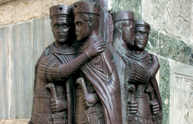

Sotto Diocleziano, la situazione interna ed esterna dell’Impero rimaneva tesa. Diocleziano volle procedere a una profonda restaurazione, varando un ampio piano di riforme (amministrative, militari, fiscali, monetarie). Suddivise l’Impero in quattro parti, dando origine a una tetrarchia di poteri. Ma non evitò il malcontento tra le popolazioni.
Così ne scrive Lattanzio, scrittore cristiano della prima metà del IV sec.:
«Ognuno dei quattro sovrani mantenne a sua disposizione, da solo, più soldati di quanti ne avessero gli imperatori precedenti per tutto l’Impero. Le imposte aumentarono inauditamente; il numero di coloro che ricevevano era tanto maggiore di quelli che pagavano, sì che i coloni rovinati abbandonarono la terra e i campi furono lasciati incolti. Ancor peggiore fu il fatto che tutte le province furono divise in parti e che in ogni regione ed in ogni città fu inviata una folla di funzionari e di esattori, e ciò non fu fatto in favore della società. Essi solamente portarono condanne, esilii e corruzione accompagnate da crudeli violenze».
(De mortibus persecutorum, VII)